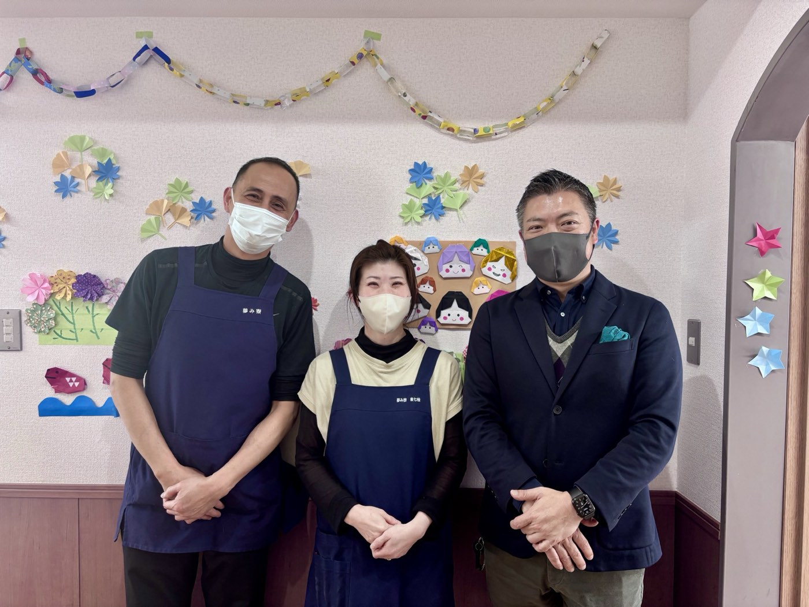

基本理念
Philosophy
利用者様にも、スタッフにも、
「居心地の良い場所」でありたい。
透明性
隠し事のないクリアな運営
笑顔
いつも笑顔が絶えない職場
誠実
人として誠実に向き合う
夢
夢を語り合える仲間たち
スタッフのリアルな声
Staff Voice

笑顔や「ありがとう」を沢山得られる仕事です。
介護は人と人とが面と向かい合い、直接触れ合って行われる仕事です。疲れることも大変なことも、もちろん沢山あります。しかし、それ以上にお互いの笑顔やありがとうをもっと沢山得られ、とても満足感を感じることができる仕事です。
介護の仕事の極意はどうやって、楽しく仕事ができるか考えることにあると思います。これからも楽しく仕事ができるように、色々勉強していきたいです。
ある1日の流れ
One Day Schedule
| 日勤（時差出勤） | 8:00〜17:00 ／ 8:30〜17:30 ／ 9:00〜18:00 実働8時間・休憩1時間 |
|---|---|
| 夜勤 | 16:00〜翌9:00 |
日勤スタッフの1日
- 8:00出勤（時差出勤）／朝食後の服薬介助・口腔ケア
- 8:30体温・バイタルチェック
- 8:50朝礼（夜勤からの申し送り）
- 9:00ラジオ体操／身体介護・生活援助・夢みサービス／レクレーション
- 11:45口腔体操
- 12:00昼食のセッティング・見守り・介助
- 12:30服薬介助・口腔ケア・居室への移動介助
交代で休憩（1時間） - 15:00食堂への誘導・レクレーション
- 16:45口腔体操
- 17:00夕食の見守り・介助
- 17:30服薬介助・口腔ケア・居室への誘導
- 〜18:00退勤（時差退勤）
夜勤スタッフの1日
- 16:00出勤（日勤からの申し送り）
- 17:00夕食の見守り・介助
- 18:00就寝介助
- 18:00〜巡視（2時間おき・起床時まで）・身体介護
- 20:00眠前薬の介助
- 6:00オムツ交換・トイレ介助
- 7:00起床介助
- 7:30朝食の見守り・介助
- 8:00服薬介助・口腔ケア（日勤へ引き継ぎ）
- 8:50朝礼
- 9:00退勤
夢み寮での働きやすさ
Benefits
残業ほぼなし
時間管理を徹底しており、プライベートの時間もしっかり確保できます。
有給をしっかり取得
スタッフ同士で協力し合い、有給休暇が取得しやすい環境を作っています。
産休・育休実績
ライフステージが変わっても長く働き続けられるよう、制度を整えています。
資格取得支援
介護福祉士などの資格取得にかかる費用を会社が全額負担します。
採用中の職種
Recruitment
JR立花駅より徒歩約7分！ブランクOK/高齢者向け住宅/賞与年2回・昇給年1回/年間休日約110日/資格取得支援ありでスキルUP可能な環境
穏やかな雰囲気でスタッフ同士の会話が多く笑顔の多い職場です。
会社負担にて資格取得も可能で未経験、ブランクがある方、キャリアアップを希望されている方には絶好の環境です。
職員増員の為夜勤専門スタッフを募集いたします。
「夢み寮 東七松」について
高齢者が"施設"ではなく、自宅に近い自由で安心できる暮らしを送れるように——
そんな想いから生まれた「寮型」の新しい住まいです。
定員31名の落ち着いた環境で、一人ひとりと丁寧に関われます。
スタッフの声
◆「一度他施設へ転職しましたが、仕事で悩んでいた際に相談したところ、快くカムバックを受け入れていただきました。改めて、この職場の環境の良さを実感しています。」
◆「様々な職種の方と関わる機会が多く、自然とスキルアップにつながる環境です。スタッフ同士はもちろん、上司とのコミュニケーションも活発で、相談しやすい雰囲気があります。」
共通しているのは、施設内の雰囲気の良さと日々の業務を通じて多くの学びが得られる点です。
また、会社負担での資格取得支援制度もあり個々のスキルアップを積極的に応援しています！
働く環境について
- 家庭的で穏やかな雰囲気
- スタッフ同士の会話が多く、笑顔の多い職場
- 上司にも相談しやすく、風通し◎
- 季節感を大切にした温かい施設づくり
ここがポイント
- 未経験・ブランクOK
- 資格取得は全額会社負担
- パートも賞与あり
- 週休2日制/年間休日約110日で働きやすい
- 希望休は月3日まで取得可能
こんな方におすすめ
- 人間関係の良い職場で働きたい方
- 利用者様とゆっくり関わりたい方
- キャリアアップを目指したい方
介護職/ヘルパー（正職員）
| 仕事内容 | 介護職員としてのサービス業務全般（定員：31床） 身体介護・生活援助 |
|---|---|
| 資格 | 下記いずれかの資格をお持ちの方 ・介護職員初任者研修（旧ヘルパー2級） ・介護職員実務者研修（旧ヘルパー1級） ・介護福祉士 ※未経験・ブランクOK／年齢：60歳迄（定年制のため） |
| 勤務時間 | シフト制 8:00～17:00（休憩60分） 9:00～18:00（休憩60分） 10:00～19:00（休憩60分） 【夜勤】15:00～翌8:00（休憩120分） |
| 休日 | 週休2日のシフト制（月～日） 年間休日：約110日／希望休は月3日まで取得可能 夏季休暇・冬期休暇・有給休暇あり |
| 給与 | 月給 239,000円〜267,000円 ※資格手当・業務手当・夜勤4回分（7,000円/1夜勤）・処遇改善手当 含む ※試用期間：6ヵ月（同条件） |
| 賞与・昇給 | 昇給年1回（7月）／賞与年2回（4月・10月） 年間 25万～110万 ※入社月・勤続年数等により変動 |
| 待遇・福利厚生 | 社会保険完備・交通費支給・資格取得支援制度（全額受講費負担）・研修制度あり・ハラスメント相談窓口あり・自転車/バイク通勤OK |
| 応募方法 | お電話、または採用フォームよりご応募いただけます。 まずはお気軽にご連絡ください。 06-6415-6888受付：平日10:00～17:00※採用係まで |
夜勤メイン介護スタッフ（正職員）
| 仕事内容 | 介護職員としての業務全般（定員：31床） 身体介護・生活援助 |
|---|---|
| 資格 | 下記いずれかの資格をお持ちの方 ・介護職員初任者研修（旧ヘルパー2級） ・介護職員実務者研修（旧ヘルパー1級） ・介護福祉士 ※ブランクOK／年齢：60歳迄（定年制のため） |
| 勤務時間 | シフト制 【夜勤】15:00～翌8:00（休憩120分） ※残業ほぼなし |
| 休日 | 週休2日のシフト制（月～日） 年間休日：約110日／希望休は月3日まで取得可能 夏季休暇・冬期休暇・有給休暇あり |
| 給与 | 月給 267,000円〜288,000円 ※資格手当・業務手当・夜勤8回分（7,000円/1夜勤）・処遇改善手当 含む ※試用期間：6ヵ月（同条件） |
| 賞与・昇給 | 昇給年1回／賞与年2回（4月・10月） 年間 25万～110万 ※入社月・勤続年数等により変動 |
| 待遇・福利厚生 | 社会保険完備・交通費支給・資格取得支援制度（全額受講費負担）・研修制度あり・ハラスメント相談窓口あり・バイク通勤可・車通勤応相談 |
| 応募方法 | お電話、または採用フォームよりご応募いただけます。 まずはお気軽にご連絡ください。 06-6415-6888受付：平日10:00～17:00※採用係まで |
介護職/ヘルパー（パート・バイト）
| 仕事内容 | 介護職員としてのサービス業務全般（定員：31床） 身体介護・生活援助 |
|---|---|
| 資格 | 下記いずれかの資格をお持ちの方 ・介護職員初任者研修（旧ヘルパー2級） ・介護職員実務者研修（旧ヘルパー1級） ・介護福祉士 ※未経験・ブランクOK／65歳まで（定年制のため） |
| 勤務時間 | シフト制 8:00～17:00（休憩60分） 9:00～18:00（休憩60分） 10:00～19:00（休憩60分） ※短時間勤務も相談可（例：9:00～13:00 / 14:00～18:00）／残業ほぼなし |
| 休日 | 週2～5日のシフト制（月～日） 有給消化率ほぼ100% |
| 給与 | 時給 1,260円〜1,460円 ※経験・スキルを考慮して決定いたします。 ※試用期間：3ヵ月（同条件） |
| 賞与・昇給 | 昇給年1回／パート賞与年2回（4月・10月） 年間 約10万～55万 ※入社月・勤続年数等により変動 |
| 待遇・福利厚生 | 社会保険完備・交通費支給・扶養控除内考慮・資格取得支援制度（全額受講費負担）・研修制度あり・ハラスメント相談窓口あり・自転車/バイク通勤OK・正職員登用あり |
| 応募方法 | お電話、または採用フォームよりご応募いただけます。 まずはお気軽にご連絡ください。 06-6415-6888受付：平日10:00～17:00※採用係まで |
JR立花駅より徒歩約12分！ブランクOK/高齢者向け住宅/賞与年2回・昇給年1回/年間休日約110日/資格取得支援ありでスキルUP可能な環境
阪神バス「今北」バス停横
JR立花駅より徒歩12分 ／ 立花駅から自転車5分（自転車貸与制度あり）
阪急「武庫之荘」駅から10分（自転車貸与制度あり）
「夢み寮大庄北」でぜひあなたのスキルを活かして働きませんか？
職員増員の為、新規スタッフを募集いたします。
当施設「夢み寮」について
高齢者がより自然な形で、共同生活を送る場を提供したいという想いから「寮」という形での施設運営をスタートいたしました。
自宅に近い自由と安心の空間で、自分らしい生活を楽しむ新しいサービスの形を提供しております。
定員は19床。私たちと楽しく一緒に仕事しませんか？
当社で働く魅力について
昇給年1回・賞与年2回と好待遇
当社では正社員に限らず、パートの方も含め賞与支給を行っております。
資格取得支援あり — キャリアUP可
実務にて経験・スキルを積んでいただき、全額会社負担にて資格取得も可能。
未経験、ブランクがある方、キャリアアップの為、資格取得を希望されている方には絶好の環境です。
週休2日制/年間休日約110日で働きやすい
希望休は月3日まで取得可能。夏季休暇、冬期休暇もあり！
介護職/ヘルパー（正職員）
| 仕事内容 | 介護職員としてのサービス業務全般（定員：19床） 身体介護・生活援助 |
|---|---|
| 資格 | 下記いずれかの資格をお持ちの方 ・介護職員初任者研修（旧ヘルパー2級） ・介護職員実務者研修（旧ヘルパー1級） ・介護福祉士 ※未経験・ブランクOK／年齢：60歳迄（定年制のため） |
| 勤務時間 | シフト制 8:00～17:00（休憩60分） 9:00～18:00（休憩60分） 10:00～19:00（休憩60分） 【夜勤】15:00～翌8:00（休憩120分） |
| 休日 | 週休2日のシフト制（月～日） 年間休日：約110日／希望休は月3日まで取得可能 夏季休暇・冬期休暇・有給休暇あり |
| 給与 | 月給 235,000円〜263,000円 ※資格手当・業務手当・夜勤4回分（6,000円/1夜勤）・処遇改善金 含む ※試用期間：6ヵ月（同条件） |
| 賞与・昇給 | 昇給年1回／賞与年2回（4月・10月） 年間 25万～110万 ※入社月・勤続年数等により変動 |
| 待遇・福利厚生 | 社会保険完備・交通費支給（規定通り）・資格取得支援制度（全額受講費負担）・研修制度あり・ハラスメント相談窓口あり・自転車/バイク通勤OK |
| 応募方法 | お電話、または採用フォームよりご応募いただけます。 まずはお気軽にご連絡ください。 06-6415-6888受付：平日10:00～17:00※採用係まで |
夜勤メイン介護スタッフ（正職員）
| 仕事内容 | 介護職員としての業務全般（定員：19床） 身体介護・生活援助 |
|---|---|
| 資格 | 下記いずれかの資格をお持ちの方 ・介護職員初任者研修（旧ヘルパー2級） ・介護職員実務者研修（旧ヘルパー1級） ・介護福祉士 ※ブランクOK／年齢：60歳迄（定年制のため） |
| 勤務時間 | シフト制 【夜勤】16:00～翌9:00（休憩120分） ※残業ほぼなし |
| 休日 | 週休2日のシフト制（月～日） 年間休日：約110日／希望休は月3日まで取得可能 夏季休暇・冬期休暇・有給休暇あり |
| 給与 | 月給 259,000円〜281,000円 ※資格手当・業務手当・夜勤8回分（6,000円/1夜勤 ※回数調整あり）・処遇改善手当 含む ※試用期間：6ヵ月（同条件） |
| 賞与・昇給 | 昇給年1回／賞与年2回（4月・10月） 年間 25万～110万 ※入社月・勤続年数等により変動 |
| 待遇・福利厚生 | 社会保険完備・交通費支給・資格取得支援制度（受講費負担）・研修制度あり・ハラスメント相談窓口あり・車通勤応相談 |
| 応募方法 | お電話、または採用フォームよりご応募いただけます。 まずはお気軽にご連絡ください。 06-6415-6888受付：平日10:00～17:00※採用係まで |
介護職/ヘルパー（パート・バイト）
| 仕事内容 | 介護職員としてのサービス業務全般（定員：19床） 身体介護・生活援助 |
|---|---|
| 資格 | 下記いずれかの資格をお持ちの方 ・介護職員初任者研修（旧ヘルパー2級） ・介護職員実務者研修（旧ヘルパー1級） ・介護福祉士 ※未経験・ブランクOK／65歳まで（定年制のため） |
| 勤務時間 | シフト制 8:00～17:00（休憩60分） 9:00～18:00（休憩60分） ※短時間勤務も相談可（例：9:00～13:00 / 14:00～18:00）／残業ほぼなし |
| 休日 | 週2日～のシフト制（月～日） |
| 給与 | 時給 1,260円〜1,460円 ※経験・スキルを考慮して決定いたします。 ※試用期間：3ヵ月（同条件） |
| 賞与・昇給 | 昇給年1回／賞与年2回（4月・10月） |
| 待遇・福利厚生 | 社会保険完備・交通費支給・扶養控除内考慮・資格取得支援制度（受講費負担）・研修制度あり・ハラスメント相談窓口あり・正職員登用あり |
| 応募方法 | お電話、または採用フォームよりご応募いただけます。 まずはお気軽にご連絡ください。 06-6415-6888受付：平日10:00～17:00※採用係まで |
現在、だいもつでは募集を行っておりません。
募集再開時にはこちらに掲載いたします。
誰かの人生に寄り添う仕事は、
自分の人生も、少し誇らしくしてくれる。
介護は、想像よりずっと温かい仕事です。